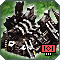
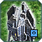
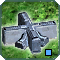

Patch 3656 beta
Welcome to the patchnotes for the 3656 beta.
This is the second part of the patch that has been tested since May, first by the tester team and later in the public beta by everyone. It contains a few things that couldn't make it into the first patch, and the HP changes to structures that were cut from the first patch as they were quite controversial and required more testing.
The changes are now accessible through the FAF Beta featured mod. To help testing, please host and play games with the FAF Beta mod and post feedback on the balance forum!
-- The balanceteam
Land
Ythotha:
There are some changes in work to buff the Ythotha, but they are hard to accomplish and not ready yet. But the unit is not forgotten!- Changes yet to come
Thistle:
While the bomber changes of the first part can either be beneficial for aeon players and their auroras or not, the t2 nerfs were definitely welcome for them. To even this out a little bit, aeon t1 mma will now not survive a single bomb like the others (and can tank less damage in ground battles), but gets a small compensation in range.- Health:
360→ 250 - Range:
32→ 35
Air
 Janus:
Janus:
The janus bomber already saw significant improvements to its accuracy in the first part of the patch, but undoubtly can see some more love. This might not be the final change, the goal is to make it a more versatile and useful (and being made fun of less) unit, while being different to the other t2 bombers. Where the other t2 bombers are most useful to take out single targets, the role of the janus will lie more in taking out large armies with its AOE.
- DamageRadius:
3→ 4 - DoTTime (Damage over Time Time, yes that's how it's called):
2.5→ 5
Navy
HP Reductions (Part 1)
The goal with all the HP reductions in general is to allow more options for agressive play, especially in the lategame and to bring the game closer to how it is working with the current low t2 pg HP and its impact on the game.The goal with increasing the HP differences between the factions is to make them a relevant and interesting part of the game, rather than a visual difference without much impact. The changes are aimed to increase faction diversity and attempt to even out the current differences in power between the factions by giving them more unique strenghts and weaknesses, rather than making them more equal. This are rather big changes, and some finetuning will likely be required in the future, but we believe they will make the game more diverse and interesting.
To compensate cybran a bit for the rather large nerfs, and to accompany their new weakness with a strenght that fits to them, all their nerfed buildings do (very slowly) regenerate health now in return. They are more vulnuable, but if you don't kill them they will be back at full HP after about 10 minutes for each building. If you want to give feedback on this particular change, you can find the discussion in the FAF Forum
T1 Land/Air/Navy and T2 Land/Air Support Factories
- UEF HP:
4100 / 4100 / 4800 and 4500 / 4500→ 4000 - Aeon HP:
3700 / 3700 / 4400 and 4100 / 4100→ 3100 - Seraphim HP:
3700 / 3700 / 4600 and 4300 / 4300→ 3100 - Cybran HP:
3500 / 3500 / 4200 and 3900 / 3900→ 2500 - Cybran HP regeneration: 3 hp/s
T2 Land/Air HQ and T3 Land/Air Support Factories
- UEF HP:
9000 and 4500 / 4500→ 8000 - Aeon HP:
8200 and 10000→ 6200 - Seraphim HP:
8200 and 10500→ 6200 - Cybran HP:
7800 and 9500→ 5000 - Cybran HP regeneration: 10 hp/s
T3 Land/Air HQs
- UEF HP:
22000→ 16000 - Aeon HP:
20000→ 12400 - Seraphim HP:
21000→ 12400 - Cybran HP:
19000→ 10000 - Cybran HP regeneration: 20 hp/s
 T2 Navy Support Factories
T2 Navy Support Factories
- UEF HP:
9000→ 6500 - Aeon HP:
8000→ 5000 - Seraphim HP:
8500→ 5000 - Cybran HP:
7500→ 4000 - Cybran HP regeneration: 6 hp/s
T2 Navy HQs / t3 Navy Support Factories
- UEF HP:
18000 / 20000→ 13000 - Aeon HP:
16000 / 18750→ 10000 - Seraphim HP:
17000 / 19000→ 10000 - Cybran HP:
15000 / 17000→ 8000 - Cybran HP regeneration: 15 hp/s
T3 Navy HQs
- UEF HP:
40000→ 26000 - Aeon HP:
37500→ 20000 - Seraphim HP:
38000→ 20000 - Cybran HP:
34000→ 16000 - Cybran HP regeneration: 30 hp/s
HP Reductions (Part 2)
If you look at the values, you can also notice that we tried to make the new HP values as consistent and intuitive as possible. Mex and PGs now have equal hp, and most support factories have the same HP as the lower tech HQ. Meanwhile every HQ upgrade will double its HP.This changes have many interesting side effects and small direct or indirect buffs to specific units and factions. Some examples?
- Tired of getting first bombed, or losing your t2 PGs to corsairs? You can pick UEF now, and enjoy their additional toughness.
- Or you always felt bad for the Notha (Seraphim Fighterbomber) to be just a less fancy version of the corsair? While corsairs are still better at what they excel at, Nothas can kill t2 mex with 2 bombs now, something Corsairs can only do if they are very lucky and hit all their bombs.
- Or you have enough of cybran players TMLing your stuff over and over, even when you have TMD? They can keep doing this, but many of their buildings are very vulnuable to TMLs themself now..
 T1 Mass Extractors and T1 Power Generators:
T1 Mass Extractors and T1 Power Generators:
- UEF HP:
600→ 760 - Aeon HP: 600
- Seraphim HP: 600
- Cybran HP:
600→ 500 - Cybran HP regeneration: 1 hp/s
 T2 Mass Extractors and T2 Power Generators:
- UEF HP:
3000 / 2160→ 2500 - Aeon HP:
3000 / 2160→ 1900 - Seraphim HP:
3000 / 2160→ 1900 - Cybran HP:
3000 / 2160→ 1800 - Cybran HP regeneration: 3 hp/s
T3 Mass Extractors and T3 Power Generators:
- UEF HP:
8400 / 9720→ 9000 - Aeon HP:
8400 / 9720→ 6200 - Seraphim HP:
8400 / 9720→ 6200 - Cybran HP:
8400 / 9720→ 6000 - Cybran HP regeneration: 10 hp/s
- Explosion Damage (only t3 Power Generator):
8000→ 5500
 Walls:
- BuildTime:
10→ 20 - UEF HP:
4000→ 3000 - Aeon HP:
4000→ 2000 - Seraphim HP:
4000→ 2000 - Cybran HP:
4000→ 1500 - Cybran HP regeneration: 3 hp/s
ACUs
 RAS & ARAS
RAS & ARAS
Nerfs to RAS have been discussed for a long time, as the powerful RAS had a couple of negative effects like a much faster jump to t3 air, especially in teamgames. The exact numbers, and if the nerf is best done by reducing income, or increasing cost, might change, but everyone who wished for a RAS nerf since a long time will hopefully be happy with this patch.
- Ras BuildTime:
1400→ 2800 - Aeon income: 18 mass,
2700 energy→ 1200 energy - Seraphim income: 16 mass,
3000 energy→ 1500 energy - UEF income: 14 mass,
3300 energy→ 1800 energy - Cybran income: 12 mass,
3500 energy→ 2000 energy
UEF ACU
Several ACU upgrades got reduced cost to allow them to be built earlier and allow for more aggressive ACU action. Especially regarding the nerfs to the T2 upgrade last patch, which reduced the power of both, attacking and defending ACUs, this changes should give players who like to play more aggressive additional tools. The changes to the billy might help with this too, but their reasoning is to change the incredible expensive and to large part useless upgrade into one that'll see more action without becoming too strong. For this, the role of the "real" nuke, that can be stopped by TMD gets changed to become a more tactical nuke, that can be also used against armies due to its lower cost. Nano-Repair System:- Energy cost:
44800→ 24000 - Mass cost:
1200→ 800 - Build time:
1400→ 800 - Health: +1500
- Health Regeneration:
+60→ +40
The 'Billy': Advanced Tactical Missile Launcher:
- (Upgrade) Mass Cost:
5400→ 2000 - (Upgrade) Energy Cost:
315000→ 75000 - (Upgrade) Build time:
5600→ 3000
- (Missle) Mass Cost:
3000→ 1000 - (Missle) Energy Cost:
216260→ 50000 - (Missle) Build Time:
3060→ 3000
- Minimum Range:
5→ 15 - Missile HP:
4→ 2 - Inner Ring Damage:
12000→ 3100 (Stacks with the 3100 from outer ring, 6200 dmg total) - Inner Ring Radius:
15→ 7 - Outer Ring Damage:
250→ 3100 - Outer Ring Radius:
25→ 12
:
Nano-Repair System:- Energy cost:
90000→ 42000 - Mass cost:
2000→ 1200 - Build time:
2800→ 1200 - Health Regeneration:
+75→ +60 - Health:
6000→ 3000
 Aeon ACU:
Aeon ACU:
Personal Shield Generator:
- Energy cost:
93750→ 35000 - Mass cost:
1500→ 1000 - Build time:
1750→ 1000 - Shield Health:
29000→ 8000 - Shield Upkeep:
250→ 150 - ShieldRechargeTime:
160→ 65 - ShieldRegenRate:
37→ 30